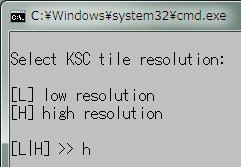
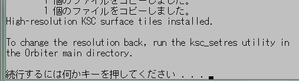
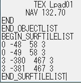
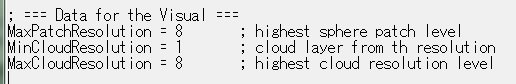
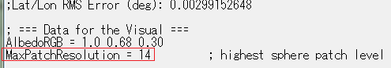
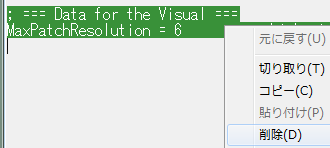
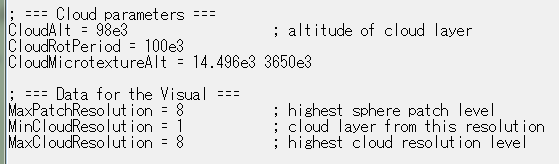
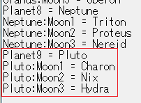

Orbiter2010のグラフィックMOD
Orbiter2010で使える、惑星などの見た目を綺麗にするMODのまとめです。
地球
雲
Earth_cloud.texをTextures2フォルダにコピーして上書き。
KSC（ケネディ宇宙センター）
中に入っているフォルダ・ファイルを全部コピーする。
Orbiterフォルダに貼り付けて、既存のフォルダ(TexturesとDoc)を上書きする。
ksc_setres.batをダブルクリック。

キーボードでHを押してからEnterを押すとインストールされる。

滑走路・着陸パッド
Enhanced Runway Texturesを先にインストールしてください。
中に入っているテクスチャ（.ddsのファイル）をコピーする。
それらをTexturesフォルダに上書きする。
バイコヌール
Baikonur 2010: Surface Tiles v1.0のインストール
月
Brighton beach surface tiles v2 for orbiter 060504
Brighton Beach周辺の地面にテクスチャを追加するMOD。※
※若干ずれるのは仕様です
中に入っているフォルダ・ファイルをそのままOrbiterフォルダにコピー。
Config\Moon\Baseフォルダの中にある、Brighton.cfgをメモ帳などで開く。
以下の行を追加して上書き保存する。
BEGIN_SURFTILELIST
0 -48 58 3
0 -49 58 3
3 -380 467 3
3 -381 467 3
END_SURFTILELIST
火星
Mars Olympus Base Hi-Res Surface Tiles, Ultra Blended and Stacked
Olympus Base周辺の地面にテクスチャを追加するMOD。
中に入っているテクスチャ（.ddsのファイル）をTexturesフォルダに上書き。
Config\Mars\Baseフォルダの中にある、Olympus.cfgをメモ帳などで開く。
以下の行を追加して上書き保存する。
BEGIN_SURFTILELIST
0 -192 17 1
0 -192 18 1
0 -192 19 1
0 -193 17 1
0 -193 18 1
0 -193 19 1
0 -194 17 1
0 -194 18 1
0 -194 19 1
2 -770 71 1
2 -770 72 1
2 -770 73 1
2 -771 71 1
2 -771 72 1
2 -771 73 1
2 -772 71 1
2 -772 72 1
2 -772 73 1
4 -3081 288 1
4 -3081 289 1
4 -3081 290 1
4 -3082 288 1
4 -3082 289 1
4 -3082 290 1
4 -3083 288 1
4 -3083 289 1
4 -3083 290 1
END_SURFTILELIST金星
金星の雲と地表を高解像度化するMOD。
中に入っているフォルダ・ファイルをそのままOrbiterフォルダにコピー。
Configフォルダの中にある、Venus.cfgをメモ帳などで開く。
MaxCloudResolution = 8に書き換えて上書き保存する。

水星
水星の地表を高解像度化するMOD。※
※このMODでは水星が白黒になりますが、現実の水星の色とは少し異なります
中に入っているテクスチャ（.ddsのファイル）をTextures2フォルダに上書き。
Configフォルダの中にある、Mercury.cfgをメモ帳などで開く。
MaxPatchResolution = 14に書き換えて上書き保存する。

MaxPatchResolution
Mercury Level 9
Texturesのような惑星・衛星を高解像度化するMODでは、cfgファイルを開いてMaxPatchResolution =
14に書き換える必要があります。
該当する天体のcfgファイルを探して、同じ作業をしてください。
木星
木星の見た目を高解像度化するMOD。
中に入っているフォルダをそのままOrbiterフォルダにコピーして上書き。
Jupiter.cfgを開いてMaxPatchResolution = 14に書き換える。
イオ・エウロパ・ガニメデ・カリスト
中に入っているフォルダをそのままOrbiterフォルダにコピーして上書き。
それぞれのcfgファイルを開いてMaxPatchResolution = 14に書き換える。
土星
ディオネ・レア・タイタン
解凍して、中に入っているTexturesなどのフォルダを全部コピーしてOrbiterのフォルダに上書きするだけ。
Level 8 Saturn's Rhea - Rhea L8 Textures v1.0
中に入っているフォルダをそのままOrbiterフォルダにコピーして上書き。
Rhea.cfgを開いてMaxPatchResolution = 14に書き換える。
天王星と海王星のテクスチャMOD
天王星と海王星については、利用できる高解像度な画像が存在しないため、MODの製作者が推測で補完してテクスチャを作成しています。
このため、現実の惑星の姿とは異なる場合もあることをご理解ください。
天王星
天王星を高解像度化して、雲を追加するMOD。
中に入っているフォルダをそのままOrbiterフォルダにコピーして上書き。
Uranus.cfgを開いて、Data for the Visual以下の2行を削除する。

以下の行を追加して上書き保存する。
; === Cloud parameters ===
CloudAlt = 98e3 ; altitude of cloud layer
CloudRotPeriod = 100e3
CloudMicrotextureAlt = 14.496e3 3650e3
; === Data for the Visual ===
MaxPatchResolution = 8 ; highest sphere patch level
MinCloudResolution = 1 ; cloud layer from this resolution
MaxCloudResolution = 8 ; highest cloud resolution level
海王星
中に入っているフォルダをそのままOrbiterフォルダにコピーして上書き。
Neptune.cfgを開いてMaxPatchResolution = 14に書き換える。
トリトン・ネレイド
解凍して、中に入っているTexturesなどのフォルダを全部コピーしてOrbiterのフォルダに上書きするだけ。
冥王星・カロン
バニラのOrbiter2010には、冥王星とその衛星は存在しません。
以下のMODを導入してください。
中に入っているフォルダをそのままOrbiterフォルダにコピーして上書き。
Sol.cfgを開いて、以下の行を追加して上書きする。
Planet9 = Pluto
Pluto:Moon1 = Charon
Pluto:Moon2 = Nix
Pluto:Moon3 = Hydra